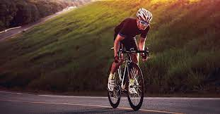

Beneficio de Ciclismo

1
El ciclismo reduce el riesgo de desarrollar enfermedades crónicas como diabetes y enfermedades cardíacas.
2
Oxigena el cerebro y combate el estrés.
3
Articulaciones más sanas, resistentes y protegidas.
4
Ayuda a evitar lesiones óseas.